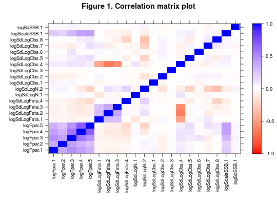

Visualises the correlation matrix resulting from an FLSAM fit, allowing quick and easy identification of parameters that are correlated
cor.plot(sam, cols = c("red", "white", "blue"), full = FALSE)
Arguments
- sam
- An object of class FLSAM results from an assessment
- cols
- A vector of colors to form the basis for the color gradiation. The default here corresponds to be a red-white-blue scheme. Intermediate colours are formed by interpolation.
- full
- A logical vector indicating whether the full correlation matrix should be visualised, or just the fitted parameters i.e. without the states
Details
The stability and estimatability of a stock assessment model depends on the degree of colinearity between the parameters - situations where the parameters are co-linear or correlated can lead to instability in the model, and high sensitivity to minor changes. However, the FLSAM model has a large number of parameters that can be set, and it is relatively easy to, inadvertently, specify a configuration where the parameters are strongly correlated.
One way of identifying such problems is by visualising the correlation matrix between the parameters. This function plots the correlation coefficient (varying between -1 and 1) as a colour intensity as a function of the corresponding parameters (on the x and y axes). A strong diagonal should always be seen running through the plot - this reflects the fact that the diagonal of a correlation matrix is 1 i.e. a parameter is perfectly correlated with itself. Ideally, the remainder of the pixels (i.e. the off-diagonals) should be zero, indicating that the parameters are independent of each other. Modifications to the binding matrices may help improve the situation.
Note that the axes are labelled with the names of the parameters as stored in "params" slot. The naming of these parameters is somewhat obtuse: for more details, see the params help file. Not all parameters may be present in a fit, depending on the specific configuration of the FLSAM.control, and are therefore not plotted.
Value
An object of class "trellis". The update method can be used to update components of the object and the print method (usually called by default) will plot it on an appropriate plotting device.
See also
params, FLSAM, FLSAM.control, levelplot
Examples
#Load library library(FLSAM) data(NSH.sam) #Generate plot cor.plot(NSH.sam)#Example of how to change plotting parameters p <- cor.plot(NSH.sam) update(p,main="Figure 1. Correlation matrix plot")